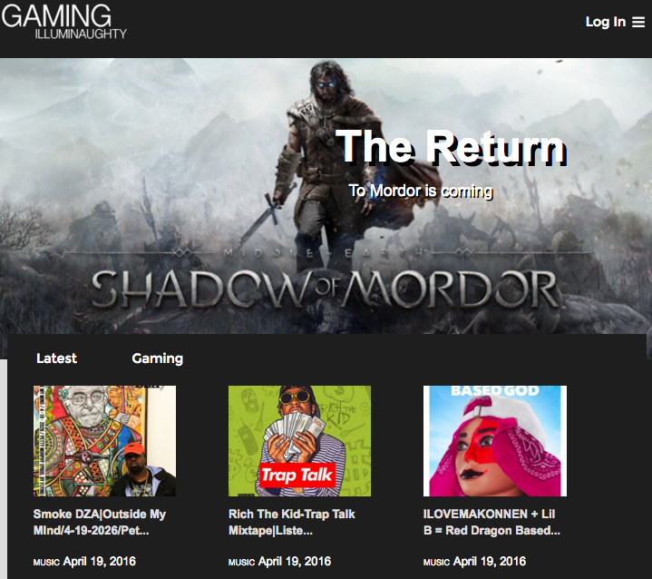

Sly Cooper Recreation (February 2016)
This was the first website I did to test my basic knowledge of HTML and CSS.

Below is work that I've done as a Front End Web Designer, each site is able to be viewed by clicking on the link. After learning HTML, CSS, and Javascript in school, I began applying my skills for community projects.
This was the first website I did to test my basic knowledge of HTML and CSS.
This fully functional website was a recreation of the 1998 Starfox64 website that had degraded over the years.

This website was created for the Animal Humane Society. Using HTML and CSS.
This was a design and code case study of the tablet version of Gaming Illuminaughty.com
This fully functional website was done as part of my internship as a Front End Web Developer for Roosevelt's Youth Basketball program.

This was fully function site was done for Anthony San to advertise his services as a Breakdance Instructor